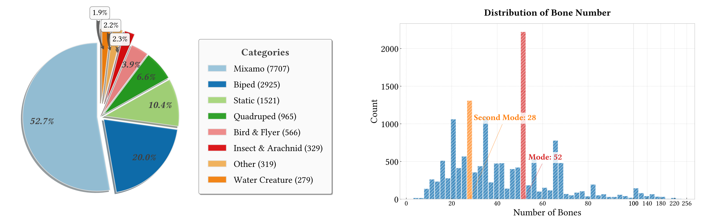
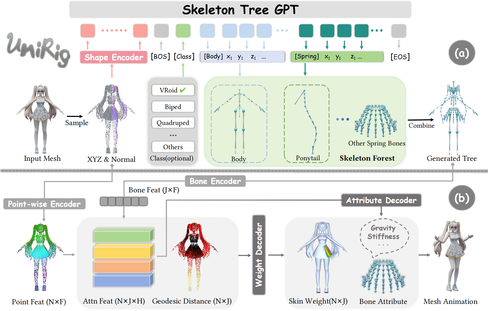
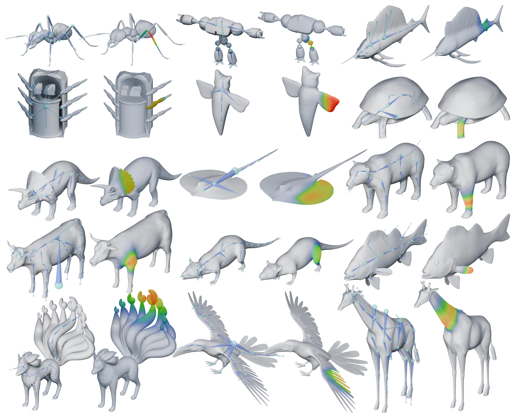

The rapid evolution of 3D content creation, encompassing both AI-powered methods and traditional
workflows, is driving
an unprecedented demand for automated rigging solutions that can keep pace with the increasing complexity
and diversity
of 3D models. We introduce UniRig, a novel, unified framework for
automatic skeletal rigging that leverages the power of
large autoregressive models and a bone-point cross-attention mechanism to generate both high-quality
skeletons and
skinning weights. Unlike previous methods that struggle with complex or non-standard topologies, UniRig accurately
predicts topologically valid skeleton structures thanks to a new Skeleton Tree Tokenization method that
efficiently
encodes hierarchical relationships within the skeleton.
To train and evaluate UniRig, we present Rig-XL, a new
large-scale dataset of over 14,000 rigged 3D models spanning a wide range of categories. UniRig significantly
outperforms state-of-the-art academic and commercial methods, achieving a 215% improvement in rigging
accuracy and a 194% improvement in motion accuracy on challenging
datasets. Our method works seamlessly across diverse object categories, from detailed anime characters to
complex
organic and inorganic structures, demonstrating its versatility and robustness. By automating the tedious
and
time-consuming rigging process, UniRig has the potential to speed up
animation pipelines with unprecedented ease and
efficiency.

In the image above, we showcase our new large-scale dataset, Rig-XL, which contains 14,000 3D models with diverse categories, illustrating the distribution of different types of skeletons and the distribution of the number of bones.

We show the overview of the UniRig framework above. The framework consists of two main stages: (a) Skeleton Tree Prediction and (b) Skin Weight Prediction. (a) The skeleton prediction stage takes a point cloud sampled from the 3D meshes as input, which is first processed by the Shape Encoder to extract geometric features. These features, along with optional class information, are then fed into an autoregressive Skeleton Tree GPT to generate a token sequence representing the skeleton tree. The token sequence is then decoded into a hierarchical skeleton structure. (b) The skin weight prediction stage takes the predicted skeleton tree from (a) and the point cloud as input. A Point-wise Encoder extracts features from the point cloud, while a Bone Encoder processes the skeleton tree. These features are then combined using a Bone-Point Cross Attention mechanism to predict the skinning weights and bone attributes. Finally, the predicted rig can be used to animate the mesh.

Here we show the results of UniRig on the validation dataset.
Slide left or right to view skeletons under different animation.
Animation Mesh
Animation Mesh with Skeleton